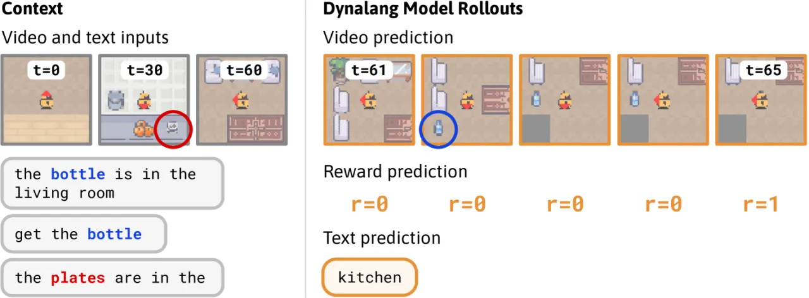
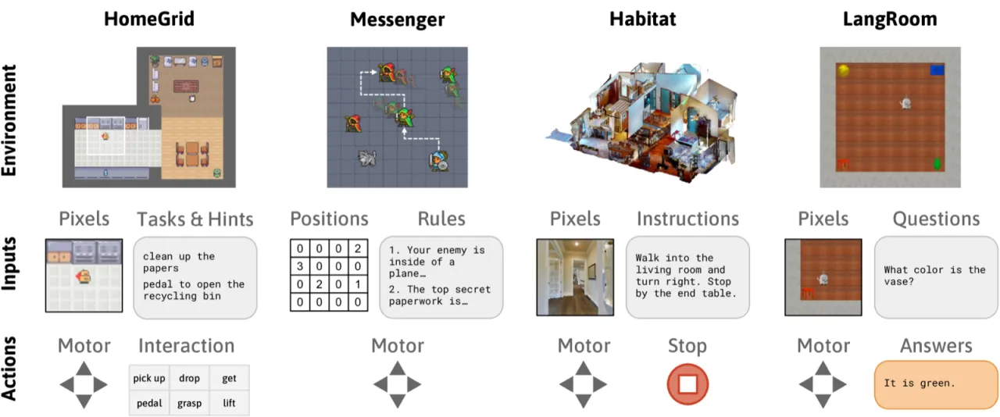
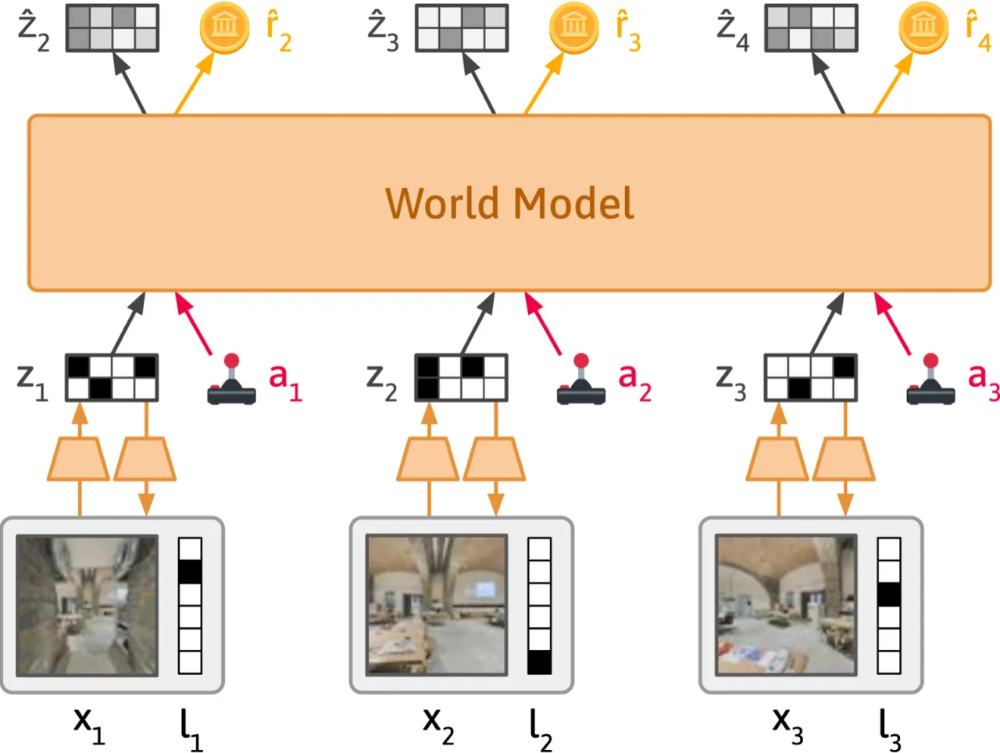
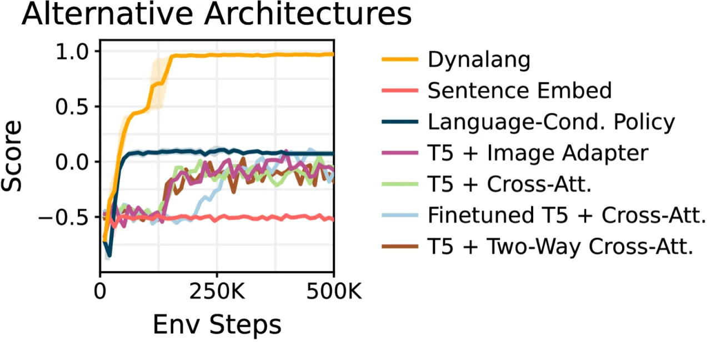
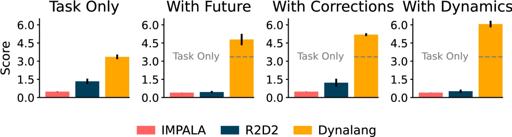

Dynalang 将语言（任务指令、状态描述、动态解释、纠错反馈）统一视为预测未来观测的信号，构建多模态世界模型，在该模型的想象空间中训练策略，无需设计专门的语言融合模块，在 HomeGrid、Messenger、VLN-CE 和 LangRoom 四类任务上全面超越 model-free 及 model-based 基线。
现有具身 AI 智能体在处理语言时存在严重局限——它们往往只能接受简单的任务指令（如"拿起苹果"），却无法利用更丰富的语言形式：状态描述（"碗在厨房里"）、动态解释（"这个按钮会关掉电视"）、以及纠错反馈。当这些多样化语言信号涌入时，model-free 的基线方法（如 R2D2）甚至会出现性能退化的现象。
"We argue that agents should interpret such diverse language as a signal that helps them predict the future — what they will observe and what reward they will receive — rather than as a direct command to execute."


Dynalang 以 DreamerV3 为基础，将其扩展为多模态世界模型：每个时间步同时编码一帧图像和一个语言 token，通过 GRU 序列模型在潜空间中进行未来预测，再由 Actor-Critic 在世界模型的"想象"轨迹中学习策略——语言理解完全由未来预测的自监督信号驱动。

图像帧与文字 token 被编码为离散 latent 表示，投影到同一潜空间，无需显式的时序对齐。序列模型（GRU）在此空间上联合预测下一时刻的视觉与语言表示，解码器分别重建：
Actor-Critic 仅在世界模型想象的 rollout 中训练，最大化预测的累计奖励。得益于多模态生成目标，模型可在无 action 、无 reward 的纯文本数据上预训练，再迁移到下游 RL 任务。在大词表（10,000 token）场景下，用语言 action 的世界模型预测做正则，有效防止策略坍塌到特定词汇。
核心洞察在于将语言的监督角色与行动角色解耦：语言提示经由未来预测损失自监督地嵌入世界模型，无需人工标注语言含义。这使得动态解释（"按下蓝色按钮会打开门"）和纠错（"你走错方向了"）这类在传统 instruction-following 范式中难以处理的语言类型，自然地融入统一框架。
在四个具有代表性的语言-具身任务上评测 Dynalang，基线包括 model-free 方法（IMPALA、R2D2）与 model-based 方法（多种语言条件化 DreamerV3 变体），以及任务专用架构 EMMA。
格子世界中，Agent 需完成物体操纵任务，并接收四类语言：仅任务（task only）、加状态描述（+ state）、加动态解释（+ dynamics）、加纠错（+ corrections）。关键发现：

Agent 需阅读描述随机化实体角色与规则的游戏手册，完成消息传递并规避敌人。难度分三阶段（S1/S2/S3）。

在 Matterport3D 真实感房屋中，Agent 须跟随自然语言指令导航至目标位置（success rate 衡量）。Dynalang 在 success rate 上显著超越 R2D2 model-free 基线，但与使用演示数据或专用架构的 SOTA 方法仍有差距（paper 明确承认）。
Agent 需导航找到颜色目标，并通过生成语言 action 回答问题。在大词表（10,000 token）下：
在 Messenger S1 上，作者系统对比了多种语言条件化策略（GRU 嵌入、SentenceBERT、T5 + image adapter、cross-attention、two-way cross-attention 等变体），Dynalang 在无需专用对齐模块的情况下全面超越所有变体，验证了"语言作为预测信号"这一核心设计的有效性。
作者在 VLN-CE 实验中明确写道："performance is not yet competitive with state-of-the-art VLN methods"，这些 SOTA 方法往往使用人类演示、大型预训练视觉-语言编码器或专用导航架构，Dynalang 均未采用。
LangRoom 实验显示，词表扩大至 10,000 时 one-hot 训练直接失败，需要额外的正则化（世界模型预测约束）或预训练才能恢复稳定性。这限制了 Dynalang 在开放域语言生成任务上的直接应用。
Dynalang 每个时间步仅处理一个视频帧和一个语言 token，不依赖时序对齐，但这也意味着长句描述被拆散到多步处理，可能丢失句子级别的语义连贯性，在需要理解长篇指令的任务中存在潜在风险。
在世界模型想象空间中训练 Actor-Critic 需要维护和展开完整的 GRU 世界模型，计算成本高于 model-free 基线。论文未提供与基线方法的训练时间或 FLOPs 对比数据。